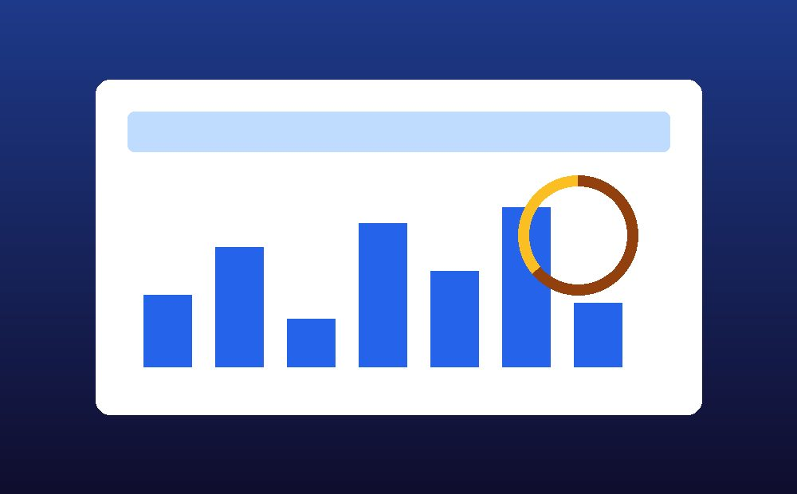

Northstar Analytics

The Challenge
Northstar Analytics is a two-person startup building a lightweight metrics dashboard aimed at solo founders who do not want to configure a full analytics suite just to see whether their week went well. They came to me with a working product and a beta waitlist but no landing page, and a hard deadline: a seed-round pitch was three weeks out, and the page needed to exist before then so investors had something to click through instead of a slide deck screenshot.
The Solution
Since the founders needed something fast and were going to keep iterating on messaging themselves, I focused the build on a single, clear landing page rather than a multi-page marketing site: one headline stating exactly what the product does, a short feature section, a simple pricing preview, and one repeated call to action pointing to their beta waitlist. I used a CSS grid layout for the feature section specifically because it made the three-column desktop view collapse cleanly to one column on mobile without any extra markup, which mattered given the tight timeline.
I also built in a light amount of interactivity, since a static product screenshot does not communicate a live dashboard nearly as well as an interface that visibly responds when you touch it, even in a small way like a hover state on a chart element.
The Result
The page shipped four days ahead of the pitch deadline, giving the founders time to review copy changes before the investor meeting rather than editing live the night before. It also gave them a single shareable link for the beta waitlist instead of routing interested users through a shared spreadsheet, which was how they had been collecting signups before.
Need a landing page on a real deadline?
Startups do not always have time for a ten-page site, and they usually do not need one yet.
Get in touch